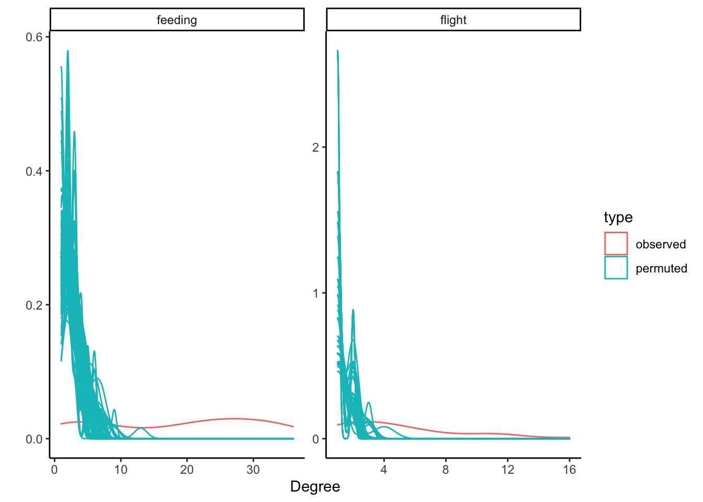

Attaching package: 'igraph'
The following objects are masked from 'package:dplyr':
as_data_frame, groups, union
The following objects are masked from 'package:purrr':
compose, simplify
The following object is masked from 'package:tidyr':
crossing
The following object is masked from 'package:tibble':
as_data_frame
The following objects are masked from 'package:stats':
decompose, spectrum
The following object is masked from 'package:base':
union
library(feather)library(sf)
Linking to GEOS 3.10.2, GDAL 3.4.2, PROJ 8.2.1; sf_use_s2() is TRUE
library(profvis) # to see what's slowing the code down
Load annotated data
datAnnot <- feather::read_feather("data/datAnnot.feather")# make this into an sf object:datAnnot <- datAnnot %>% sf::st_as_sf(coords =c("location_long.1", "location_lat.1")) %>% sf::st_set_crs("WGS84") %>%mutate(timeOnly = stringr::str_extract(as.character(timestamp), "[0-9]{2}:[0-9]{2}:[0-9]{2}"))roostPolygons <- sf::st_read("data/AllRoostPolygons.kml", quiet =TRUE) %>% sf::st_transform("WGS84")
# How many observations and how many unique individuals?nObs <-map_dbl(seasons, nrow)nUniqueIndivs <-map_dbl(seasons, ~.x %>%pull(trackId) %>%unique() %>%length())# Get unique dates for eachdates <-map(seasons, ~{.x %>% sf::st_drop_geometry() %>% dplyr::select(trackId, dateOnly) %>%distinct() %>%group_by(trackId) %>%mutate(nUniqueDates =length(unique(dateOnly))) %>%ungroup()})
For now, I’m just going to work with the 2021-2022 breeding season, b_21_22. Later, can expand the analyses to the other seasons.
Also for now, I’m going to restrict it to individuals that were present on all of the days. Just simpler to think about.
Setup
# Get restricted data: only individuals that were present on all of the days.maxDates <-max(dates$b_21_22$nUniqueDates)whichIndivs <- dates$b_21_22 %>%filter(nUniqueDates == maxDates) %>%pull(trackId) %>%unique()b_21_22_restricted <- seasons$b_21_22 %>%filter(trackId %in% whichIndivs)# for the sake of speed in testing these permutations, I'm going to limit it even more: just the first 60 days.testShort <- b_21_22_restricted %>%filter(dateOnly %in%sort(unique(b_21_22_restricted$dateOnly))[1:60])nrow(testShort)
[1] 128081
Unrestricted permutation
Shuffle data
Separate into a list of individuals and permute each individual
indivs <- testShort %>% sf::st_drop_geometry() %>%group_by(trackId) %>%group_split(.keep = T)permutationFunction <-function(indiv){# get unique dates as a vector uniqueDates <-unique(indiv$dateOnly)# shuffle the dates vector shuffledDates <-sample(uniqueDates, size =length(uniqueDates), replace = F)# Join the permuted dates permutedIndiv <- indiv %>% dplyr::left_join(data.frame("dateOnly"= uniqueDates,"permuted_dateOnly"= shuffledDates), by ="dateOnly")return(permutedIndiv)}# # Run the permutations (let's start with 100, since it takes so long)# set.seed(3)# nPermutations <- 100# permutations <- vector(mode = "list", length = nPermutations)# for(i in 1:nPermutations){# permutations[[i]] <- map_dfr(indivs, permutationFunction)# cat(paste("iteration", i, "complete\n"))# #beepr::beep(sound = 1)# }# permutations <- map(permutations, ~{# # change names to remove the original date/time columns. Need to do this so it will work with makeGraph.# .x %>% # mutate(timeOnly = lubridate::hms(timeOnly),# permuted_timestamp = permuted_dateOnly + timeOnly) %>%# dplyr::select(-c(dateOnly, timestamp, timeOnly)) %>% # dplyr::rename("timestamp" = permuted_timestamp,# "dateOnly" = permuted_dateOnly) %>%# sf::st_as_sf(coords = c("location_long", "location_lat")) %>%# sf::st_set_crs("WGS84")# })#save(permutations, file = "data/permutations.Rda")load("data/permutations.Rda")
# degree distributiondd_p_flight <-map(flight_uw_permuted, ~enframe(degree(.x))) %>% data.table::rbindlist(idcol ="iter") %>%mutate(type ="permuted",situation ="flight")dd_p_feeding <-map(feeding_uw_permuted, ~enframe(degree(.x))) %>% data.table::rbindlist(idcol ="iter") %>%mutate(type ="permuted",situation ="feeding")dd_o_flight <-degree(flight_uw_obs) %>%enframe() %>%mutate(iter =0, type ="observed", situation ="flight")dd_o_feeding <-degree(feeding_uw_obs) %>%enframe() %>%mutate(iter =0, type ="observed", situation ="feeding")degreeDF <-bind_rows(dd_p_flight, dd_o_flight, dd_p_feeding, dd_o_feeding)# XXX it will be important, when creating the edge lists, to go back and include all the possible individuals! This is pretty critical, actually.degreeDF %>%ggplot(aes(x = value, col = type, group = iter))+geom_density()+facet_wrap(~situation, scales ="free")+theme_classic()+ylab("")+xlab("Degree") # for any of this to mean anything, need to include way more data, which means I need to make the functions go faster.

XXX next to do: - use a smaller subset of the days (10 days? vs 60 that i have now) to test out benchmarking to get the code to run faster. - change network code so that it includes all possible vertices. This one’s really important, since it has a big effect on things like density. - dig more into how to benchmark code, in order to speed up the incredibly slow steps here. - set up this project on the cluster so that I can run these things without wearing out my laptop - scale up to dealing with more data. I have to drastically improve the function performance if it’s going to make sense to do this.
make roost networks! distance only, and cluster-based.
write a function to make roost networks based either on distance or on a vector of cluster assignments.